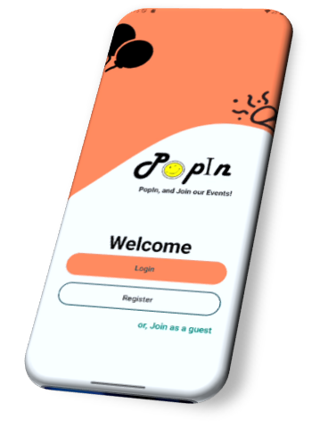
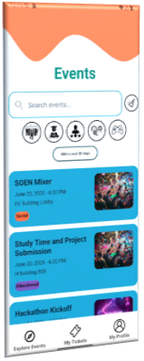
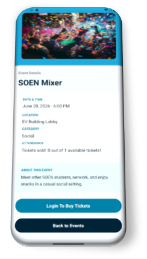
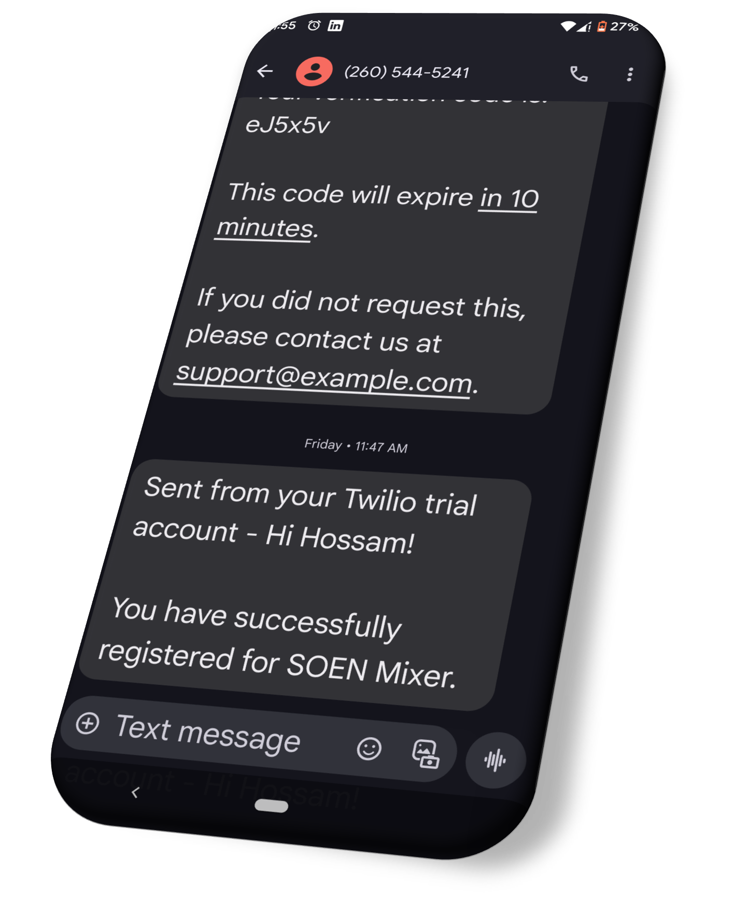

PopIn is an app for creating and registering for events. Organizers can create events, and attendees can search and filter them to find what suits them, then register. A guest mode lets anyone browse the available events without signing up, so people can see what's on before creating an account. Registration is built to handle many people signing up at the same time using concurrency-safe transactions, so spots are counted correctly and an event can't be overbooked. A notification system keeps people informed by email and by mobile number.
I led the development of PopIn as part of a team and built most of the app. I designed the interface and the database, and implemented most of the app's functionality, including event creation and filtering, registration, the guest system, and the privacy details and settings. I also worked on the concurrency-safe transactions and the notification system.



